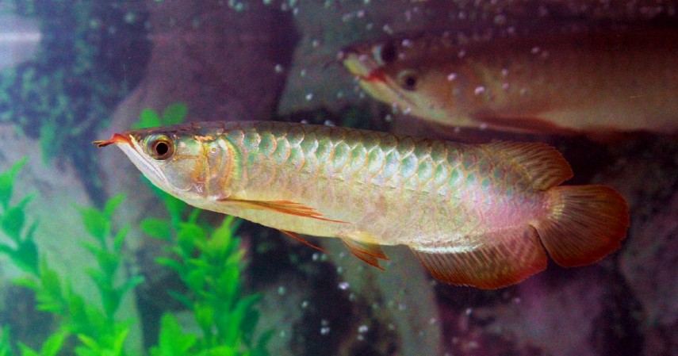

Ikan Arwana
Ikan predator untuk peliharaan yang satu ini memang populer dijadikan penghias di akuarium. Warna yang cantik dan rupawan membuat banyak orang kadang enggak menyangka bahwa ikan arwana adalah jenis ikan pemangsa.
Ikan yang sudah ada sejak zaman purba ini sebenarnya tersebar di seluruh dunia, namun ikan arwana asia memiliki ciri tersendiri dengan bentuk badannya yang panjang dan berwarna perak pada umumnya.
Perawatan
Sebaiknya air aquarium tempat ikan ini tinggal diganti secara berkala karena keterbatasan tempat tinggalnya yang sempit dan tidak mengalir, lain halnya jika ia dipelihara dalam kolam besar dengan sistem air yang mengalir atau di habitat aslinya seperti di sungai yang cenderung banyak air sehingga penyakit tidak mudah meluas Untuk suhu air, ikan arwana lebih menyukai air yang hangat sehingga banyak pemilik ikan Arwana yang menggunakan heater di aquarium maupun di kolam. Karena jika menggunakan air yang terlalu dingin dikhawatirkan dapat muncul penyakit kembang sisik, yakni penyakit yang disebabkan oleh karena kualitas air yang kurang baik serta perubahan suhu yang begitu drastis. Penyakit kembang sisik ini dapat berujung kematian pada Arwana bila tidak lekas ditangani. Penggunaan batu kerikil atau pasir dalam aquarium yang dihuni Arwana juga dapat menyebabkan insang yang melipat, sehingga tidak dianjurkan karena mengakibatkan banyaknya bakteri serta kotorannya sendiri yang tidak terangkat bersih, disamping insang melipat ada gejala lain yang dapat ditimbulkan pasir atau bebatuan dalam aquarium yaitu ekor Arwana bisa mengecil
Tanning adalah sebuah metode untuk mengubah warna kulit ikan Arwana Super Red dari warna asli, menjadi lebih kemerahan dan berwarna cerah. Tanning selain digunakan sebagai pengganti sinar matahari namun juga baik untuk perkembangan ikan Untuk mentanning ikan Arwana Super Red sebaiknya gunakan background aquarium berwarna putih polos, agar tampilan lebih jernih dan ikan terlihat lebih bersih serta sedap dipandang, namun semua itu tergantung selera, ada juga yang menggunakan warna lain seperti hitam atau biru. Hindari background berwarna hitam saat melakukan tanning karena Arwana Super Red akan terlihat berwarna kegelapan atau merah gosong, terkecuali jika hal ini memang diinginkan pemilik. Dalam penempatan lampu tanning sebaiknya diletakan di satu bagian disisi samping aquarium. Lampu tanning biasanya dikaitkan dengan hook yang ditempel langsung ke kaca aquarium. Untuk lampu tanning, Yonan biasa menggunakan lampu khusus tanning merek Jebo warna putih berbentuk panjang atau Phillips tipe PLL 827 bentuk pendek yang berwarna kuning yang mudah didapat di pasaran Penggunaan arus buatan dalam aquarium dengan tujuan memanjangkan ekor atau dayung ikan Arwana dinilai Yonan kurang tepat karena sesungguhnya panjang pendeknya ekor dan sirip ikan Arwana lebih dipengaruhi oleh genetika
Reproduksi
Bukan cuma manusia saja yang punya tes kecocokan jodoh, begitu pula dengan ikan hias yang satu ini. Tandanya bisa terlihat dari perilaku indukan yang mulai berenang bersama-sama di dalam akuarium. Jika sudah terlihat demikian, kamu dapat memisahkan dua ikan arwana tersebut keluar dari gerombolan lainnya. Pisahkan di akuarium khusus yang digunakan untuk proses berkembangbiak agar mempermudah pemijahan nanti. Setelah indukan telah sukses menghasilkan benih, kamu harus memperlakukan anakan tersebut dengan baik, seperti diberi pakan khusus berupa cacing pita, agar pertumbuhannya bisa maksimal. Nah, jika ikan arwana telah mencapai ukuran kurang lebih 12 cm, kamu bisa melakukan pemisahan dari induknya untuk menghindari kanibalisme yang kerap terjadi.
Setelah benih dipisahkan, selanjutnya agar budidaya ikan arwana bisa menghasilkan ikan yang berkualitas adalah dengan melakukan penjemuran di bawah sinar matahari pagi, agar warna yang akan dihasilkan bisa bagus. Dalam proses pemeliharaan benih yang sudah dipisahkan ini, kamu perlu melakukan cara ini hingga ikan berukuran kurang lebih 24-25 cm.